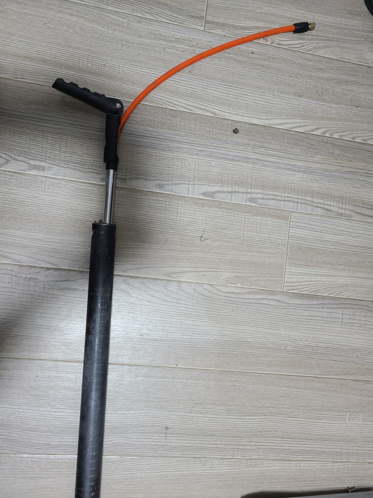
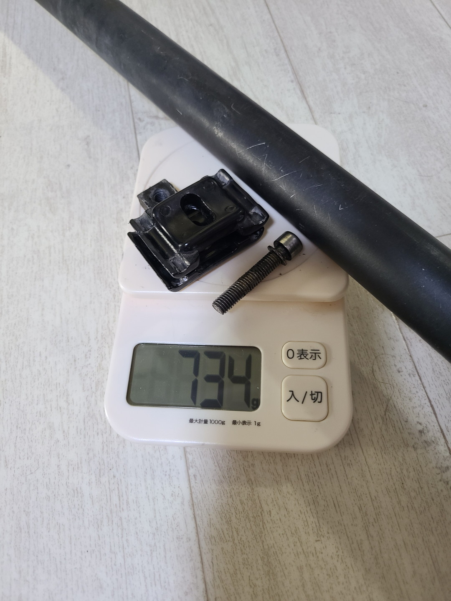
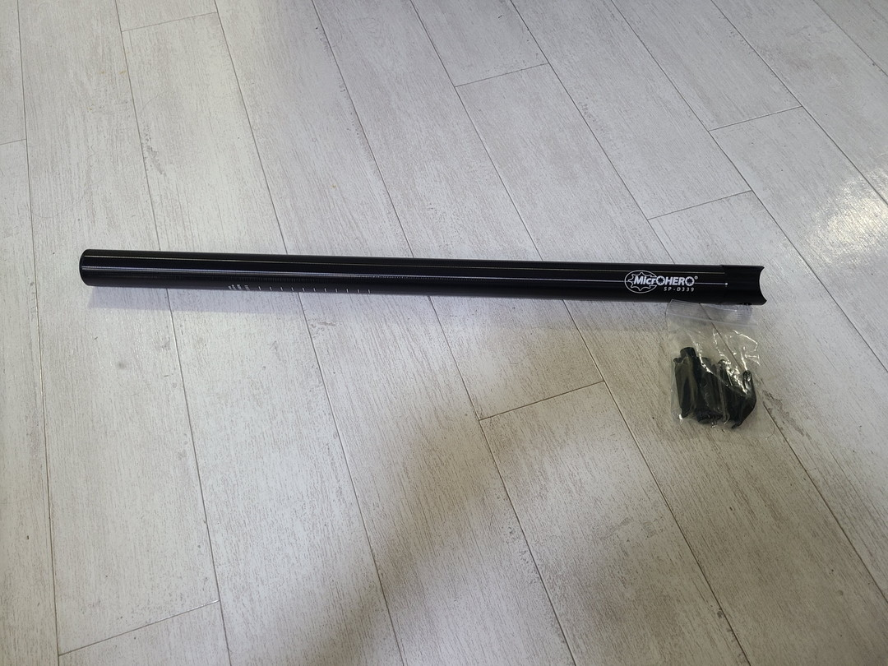
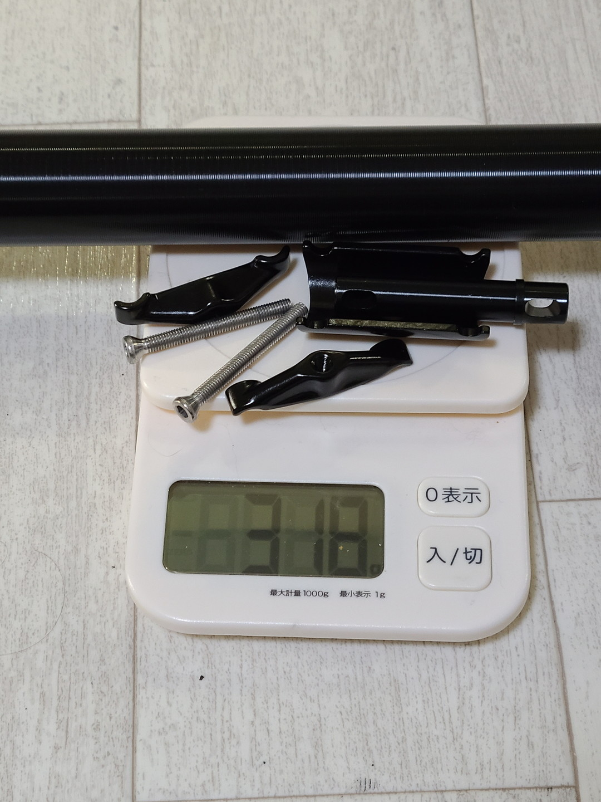
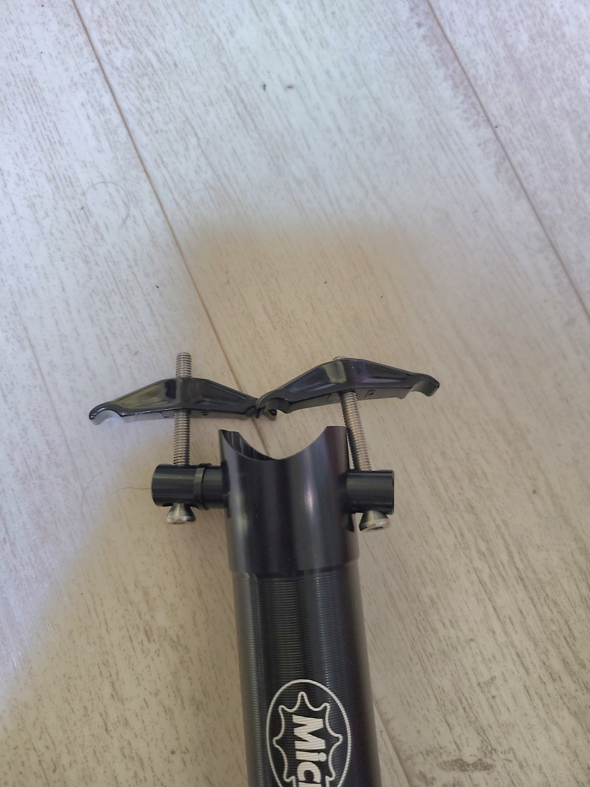
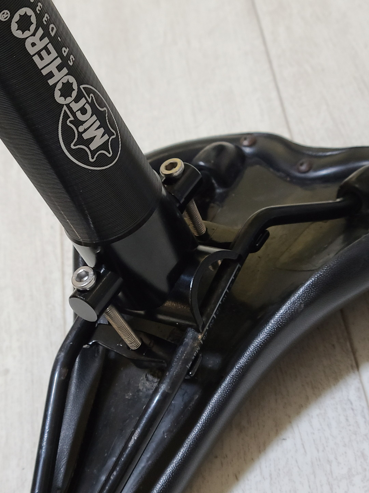
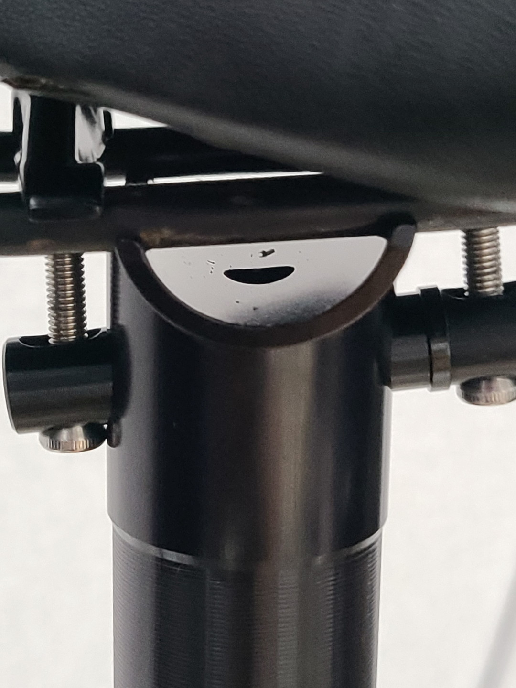
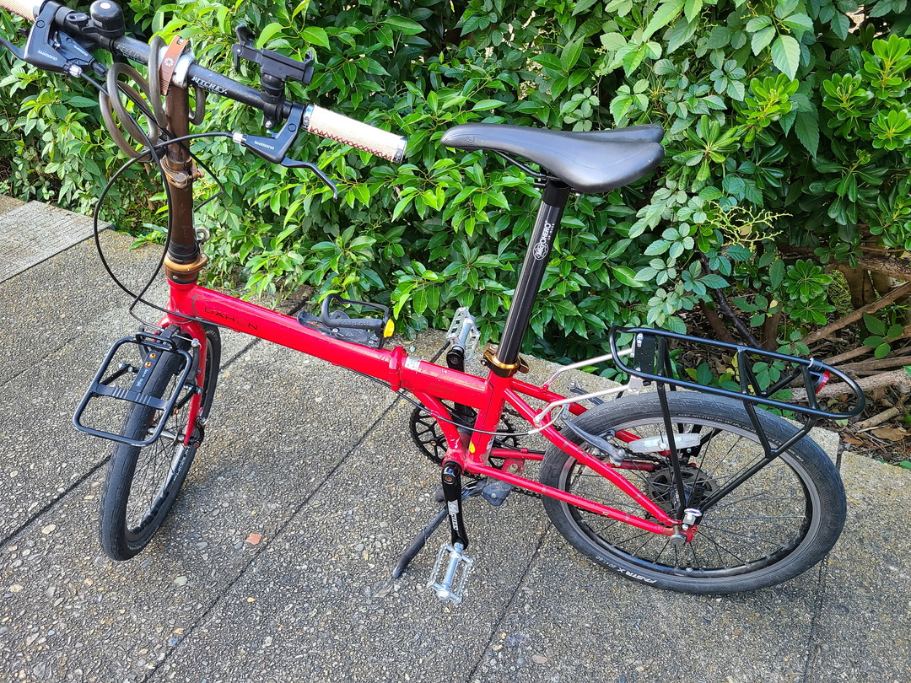
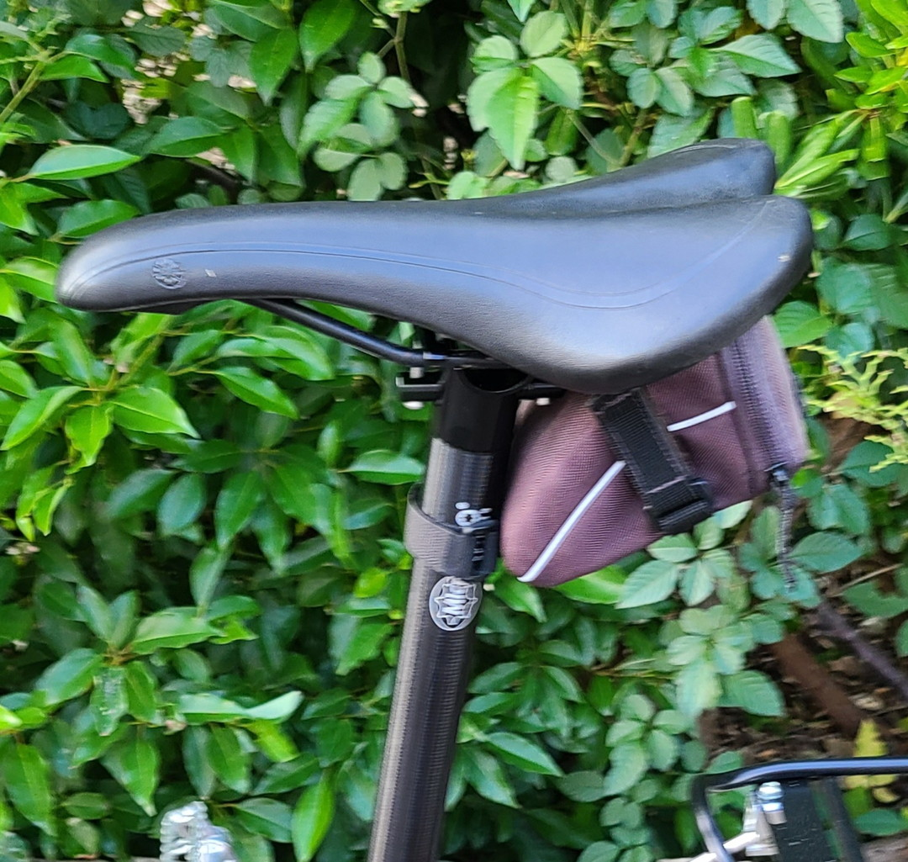

シートポスト
シートポスト、サドルの真下にある鉄パイプの部分、たまに取り外されてブロッコリーになったりならなかったりする。いたずらで外されるくらいなので交換はかなり簡単だ。しかし私は以前使っていたクロスバイクを含め、一度もこれを替えたことがなかった。理由は単純で費用対効果が薄いからだ。別にトルクが軽くなるわけでも無ければ操作性が変わるわけでもないので今まで後回しにしていた。
だが、時は来た。
私の所有しているDahon Speed P8君はポンプ機能付きのシートポストなので割と重い。やはり輪行を考えるとできるだけ車体は軽くするに越したことはない。
（とは言えこういうギミックは男の子心をくすぐる）

試しに測ってみると……

734g、とそこそこの重さだった。このポンプ機能、無いよりあったほうがマシなんだけれども空気圧入れるのに時間が掛かるのとシートポストの再調整が必要になるなど嵩張らない以上のデメリットが大きい（とかいいながら3回位使ったわけだけども）。そもそもフロントキャリアに携帯ポンプをつけておけば解決する問題なのでサクッと替えてしまうと思ったわけである。
何を買うか
とはいえミニベロ用のシートポストは700cのロードやクロスバイクに比べて長さが必要なので選択肢は多くない。別にレーサーではないのでカーボンにする必要もないしなぁ（あと金がない）……。と思っていたら出てきたのがこれ。
超軽量330g!これが本当だとしたら400gも軽くなる。この間つけたリアキャリアを相殺することができるほどの軽量化だ。……しかし、やけにレビューが気になる。
シートポストが曲がる
ほんとか？ほんとにそんなことあるのか？いくら軽量って言ったってアルミだぜ？体重制限も80kgと書いてあるし……いやいや御冗談を。「曲がるやつは乗り方が悪い」という意見さえ書いてあり真偽は謎。しかし評価はいい。サクラチェッカーも大丈夫だと言っている。
追記:サクラチェッカーの妥当性が疑わしく思えたためリンクを消しました。別にサクラではない＝粗悪品ではないというわけでもないし。
ちなみにリンクを消した最大の要因は、別商品の情報に誤りがあるとつぶやいた際、相手側からリプライがあり、ついでなので明らかに誘導的なアフィリエイトリンクについて言及した際にスルーされたからです。
買った。

届いた。ビニール袋にダンボールという簡易包装。そして問答無用のNo説明書。中華だ。紛れもない中華。とりあえずまずは重量を測ってみよう。

318g、公式よりも12gも軽い。良心的じゃないか。正直600mmなんていらんから切断すれば更に軽量化できるぞ……！
組み立て
自分のステータスをintに振ってなかったからか地味に苦戦した。だって普通のやぐらと違うんだもん。
2022-11-17追記
~一応タイプ的には2本締めやぐらっていうみたいですね。どうやら軽量化と細かい角度調整に向いているらしい。~
最終的に商品画像やレビュー写真とにらめっこしてなんとか理解した。

まずこの状態にして

こうやって爪になって部分を下に通してボルトで締める。なんかきつく締めたらギギギとか言い出したのでこれが曲がる原因のひとつなのかもしれない。シートポストの高い方を背後に持ってきてシャフト（留めの凸がある棒）の凸部分を後ろにして取り付けるのが基本……なはず。
自信がないのはAmazonのレビュー画像だと凸部分を前にしていたり、別サイトのレビューでは後ろだったりと人によって様々だからだ。シート調整のためにあえて前にしてる人もいるらしいから座れればいいんじゃないですかね（適当）
しかしまあ一般的なシートポストに比べて角度調整がめんどくさそうなのは確かだ。もう自分は水平に近い角度で固定してしまうから気にしてないけれど、頻繁に調整したい人は避けた方がいい商品かもしれない。あと……

この穴のせいで小一時間迷ったじゃないか。何なんだ一体。最近流行りの肉抜きか？サドルもマウスもミニ四駆も何でもかんでも肉抜けばいいと…………まあいいや。
装着

今までのと似た色なので見た目はあまり変化がない。持ち上げても正直軽さを実感できてない。これはリアキャリアをつけたばかりだからというのも大きいと思われる。実際シートポスト同士を持つと違いは簡単にわかる。

曲がる曲がると言われてるから不安になりながらもサドルバッグを取り付ける。というかだいぶ色あせたなサドルバッグくん。こいつにはリペアキットを入れているので流石に外す訳にはいかない。ちなみに内容物込みの重さは230gくらいだった。これにサドルの重さも加わるわけだから確かに重心が上に偏りそうだなと思った。
インプレ
近くのサイクリングロードを流してみた感想としてはおもったよりも乗り心地が変わった気がする。直進性は若干安定したが乗ってるときの安心感は減った気がする。というのもシートポストが軽くなったことで重心が下がったため直進性が上がり、それでいてミニベロの宿命としてシートポストを長くするので上半分が空洞状態に近くなり、乗り手としては若干不安定さを感じてしまうのかもしれない。考えてみれば今までのシートポストはただのパイプではなく、中にポンプ機構が入っていた。謂わば最後までチョコたっぷり状態だったわけである。体重を任せるにはもってこいだったわけだ。……まさかこんなところで付属シートポストの美を見つけるとは……。大体のものは失ってから気づくものだなあ（しみじみ）。これを機にサドルを替えてもいいかなと思ってはいる。劣化しすぎてなんかもうスポンジみえてきてるので。
追記2022-11-17
~普通に考えたら樹脂とアルミって乗り心地ぜんぜん違うわな。~
おわり
なんかネガキャンみたいな内容になってしまったが個人的にシートポストでこんなに乗り心地が変わるのかといい経験になったから良しとしよう。一応直進性も上がったし……。あ、ちなみに曲がったら追記します。ではまた～。
追記2022-11-17
まだ曲がってない。アマゾンのレビューでは数回で曲がったという物も多いが、身長165cm,60kgが二ヶ月位乗り回し、輪行で金沢3泊4日もしたが今のところ全く問題はない。とりあえず600mmは長かったので10cmくらいカットした。気になることといえば傷がついた時に目立つくらいだろうか。
また追って追記していこうと思う。